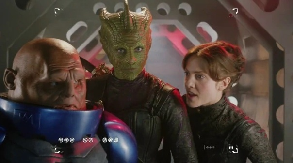

MVO [BaibaKo], DVO [WhoStudios] или Original [ENG]
Субтитры: Русские {TeamNotDead} или Английские

Prequel (Deep Breath)
приквел к 8 сезону
23 августа 2014
Формат: 4-минутный эпизод
| Варианты озвучек: | * MVO BaibaKo * DVO WhoStudios |
|---|---|
| Скачивание и просмотр: |
Мини-эпизод снят в стиле «Полевых отчётов Стракса», которые выходили в 2013-14 году.
Команда Патерностер находятся в космическом корабле, который вот, вот разобьется в Лондоне. В то время как Дженни Флинт и Вастра направляют корабль в воду, Стракс отправляет сообщение на Сонтар про способности Доктора. Когда он доходит до конца сообщения, Дженни говорит, что они собираются парашютировать с корабля. Когда банда покидает корабль, Вастра упоминает, что в реке Темзе был замечен динозавр.

